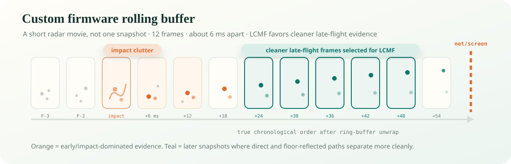

OPS243
Measures ball and club radial speed from its rolling buffer. This remains the speed authority.
OpenFlight · Field report · Updated July 18, 2026
A plain-language guide to the OPS243 + TI IWR6843 pipeline, the late-flight algorithm we call LCMF-v1, what two TrackMan sessions taught us, and how we plan to improve coverage without hiding quality.
Explain it like I’m five
The OPS radar tells us how fast the ball is moving. The TI radar takes a short movie made of radio echoes. We find the little streak that moves away from the tee, keep the clearest moments from each frame, and pay extra attention to the later part of the flight because the ball is farther from the club, golfer, and impact mess.
Five slightly different physics models each estimate launch angle. We average their answers and use the measured mount geometry directly. If the radar movie is strong, the UI shows the measured radar angle. If the movie is weaker but still plausible, we want to show it as a lower-confidence two-dot radar read. If the radar cannot honestly follow the ball, the UI labels a normal club-based estimate instead.
The important idea: many looks + multiple models + honest confidence, never a hidden adjustment that quietly fits one golfer or one club.
Where we are
For Iron/Wedge shots, the current pipeline is inside the 1° target on the shots where the radar has enough clean evidence. Driver and Mis Hits are tracked separately because they expose different engineering problems. The next job is widening coverage and hardening setup inputs so the same result travels to different builders, mats, rooms, and ranges.
State the problem
OpenFlight has to measure vertical launch, horizontal launch, and eventually useful club-delivery signals while the ball is only a few feet from the radar. Indoors, a fast driver can hit a net or screen tens of milliseconds after impact. That leaves very little clean flight, and the earliest echoes are exactly where the club, hands, tee, ball, floor reflection, and impact noise overlap.
The K-LD7 taught us the core lesson: one transmitter, a slower frame cadence, coarse range separation, and one or two useful post-impact looks were not enough to consistently separate the real ball path from multipath and blind-zone behavior. It could look good on selected shots, but it did not create a robust 1° path against TrackMan, the gold-standard source of truth for launch-monitor validation.
The product problem is not just “detect a ball.” It is detecting the right moving echo, proving it is the ball, modeling the ground-reflected copy, and reporting confidence honestly when the evidence is thin.
Why this radar
We selected TI’s IWR6843 because it can capture coherent complex radar data across multiple receive channels at a much faster cadence than the K-LD7 setup. The IWR6843LEVM board was the practical evaluation platform: available hardware, known antenna geometry, TI tooling, and enough on-chip L3 memory to hold a compact radar cube from the shot.
We created and uploaded custom firmware that turns the TI board into a short “radar movie” recorder. Instead of asking the radar to make a decision live, the board saves 12 tightly spaced snapshots of the ball leaving the tee. Each snapshot keeps detailed antenna information, so our software can later follow the ball moving away and separate it from the floor reflection, club, and impact noise.
| Capability | Why it matters | Current use |
|---|---|---|
| Fast frame cadence | More looks before the net or screen contaminates the track. | 12 snapshots over roughly 72 ms in the current custom firmware. |
| Fine range bins | Direct and floor-reflected paths can separate in range as the ball leaves the tee. | 3.2 GHz sweep, about 4.7 cm bins. |
| Complex antenna channels | Phase across the array carries angle information even when amplitude is messy. | Eight vertical virtual channels from TX1 + TX3 and four RX. |
| L3 rolling buffer | We can keep raw shot evidence and improve offline without reflashing for every idea. | 786,452-byte dump per trigger, drained by the Pi. |
OPS + IWR6843
The one-chip goal was useful while learning the TI sensor, but it is no longer the product direction. OPS speed has been highly consistent and does not need to be replaced. The TI board is now focused on the measurements its antenna array can add: vertical launch angle today, and eventually aim direction and club path.
Measures ball and club radial speed from its rolling buffer. This remains the speed authority.
Stores a 72 ms coherent radar movie across eight virtual vertical antenna channels.
Combines OPS speed with TI launch angle. If TI has no read, the shot still appears with an estimated angle.
The K-LD7 could usually see only one or two useful frames before the indoor net stopped the ball. It also had coarse range resolution and only a two-element angle view, so a clean ball echo and a floor reflection could blend into one believable but wrong angle.
The custom firmware saves a compact, high-detail radar movie: 12 snapshots of the ball leaving the tee, spaced about 6 ms apart. Each snapshot uses multiple antenna views and fine distance slices, which gives the software enough evidence to model the floor reflection instead of pretending it is not there.
The rolling buffer is the enabling trick. This is similar to how OPS keeps a rolling speed buffer: the radar is always recording, and impact tells the system which recent slice matters. A sound trigger connected to the Pi freezes the TI radar movie after impact, preserving the last 72 ms of raw antenna data. The Pi then drains the 786,452-byte dump over UART in about 7.6 seconds. We accept the delay because we keep the raw evidence for every shot.

LCMF-v1
LCMF means Late-Flight Complex Multipath Fusion. “Late-flight” means it favors the cleaner second half of the captured ball flight. “Complex” means it keeps both amplitude and phase from every antenna. “Multipath” means direct and floor-reflected echoes are modeled together. “Fusion” means no single model gets to decide the answer.
The same impact edge timestamps the OPS shot and starts the TI dump. Matching is normally within a few milliseconds.
Static clutter is removed. The tracker follows a target moving outward through range over time rather than trusting aliased Doppler speed.
Keep snapshots with strength score ≥ 8 and range ≤ 4.7 m, then retain at most the strongest four from each frame. One noisy frame cannot dominate.
The independently measured OPS ball speed defines the candidate trajectory. TI’s local range-walk velocity handles the small timing correction between transmitters.
Two models compare the eight antenna channels across all balanced snapshots. Three inspect the direct and reflected range structure in the chronological late half.
Each model receives exactly 20% weight. Their mean is the LCMF angle. The production path favors measured setup geometry and the same estimator rules for every club.
| Model family | Plain-language question | Data used |
|---|---|---|
| Two channel models | Which launch trajectory best explains the phase pattern across the antenna array when direct and floor paths are allowed? | All balanced snapshots |
| Three fast-time models | Which trajectory best explains the small range separation and mixture of direct and reflected echoes around the tracked ball? | Chronological second half |
| Equal fusion | What answer survives five different assumptions instead of winning one hand-picked model? | 20% per component |
Real captured shots
The gray marks below are usable snapshots along three real TrackMan-paired ball tracks. Orange circles are the strongest four retained from each frame. Teal dots are the chronological late half used by the three fast-time models. Frame numbers wrap because the radar memory is a ring; the horizontal time axis is the true order.

This selection is deliberately boring: no club-specific timing window, no TrackMan input, and no hand-picked frame number. The same strength, range, per-frame balancing, and chronological-half rules run on every shot.
Setup calibration
The biggest lesson from the first two validation sessions is simple: the algorithm can follow the ball, but it needs the real-world setup described correctly. Mount tilt, radar height, tee distance, ball height, mat height, and net distance all affect where the radar expects the direct and floor-reflected echoes to appear.
When those inputs are right, the same LCMF-v1 estimator produces a centered result across two indoor TrackMan sessions without per-club tuning. When those inputs are wrong, the error can look like a radar problem even though the underlying ball track is still present.
| Setup input | Why it matters | Product plan |
|---|---|---|
| Mount tilt | Defines how the antenna frame maps into the golfer's launch frame. | Measured setting first; later add an on-rig level sensor. |
| Tee distance | Changes the expected direct/reflected path geometry during the first few feet of flight. | Support measured distance and radar-assisted setup warnings. |
| Mat and ball height | An elevated mat changes the ball height relative to the radar and the floor reflection. | Store ball height and mat/surface height separately. |
| Net or screen distance | Defines how much clean late flight exists before impact with the screen or net. | Log it per session and use it when selecting late frames. |
TrackMan validation
The headline below combines two indoor TrackMan validation sessions. Driver and Mis Hits are separated so the main number describes Iron/Wedge launch-angle performance rather than hiding known edge cases.
| Group | Shots | Covered | Coverage | MAE | p50 | p75 | p90 | Bias |
|---|---|---|---|---|---|---|---|---|
| Iron/Wedge headline | 87 | 76 | 87.4% | 0.83° | 0.67° | 1.20° | 1.80° | -0.04° |
| First validation session Iron/Wedge | 41 | 39 | 95.1% | 0.83° | 0.78° | 1.25° | 1.81° | -0.10° |
| Second validation session Iron/Wedge | 46 | 37 | 80.4% | 0.84° | 0.59° | 1.19° | 1.70° | +0.02° |
How to read absolute error: MAE is the average distance from TrackMan, ignoring sign. p50 means half the covered shots were closer than that error. Bias keeps the sign and tells us whether the whole group is systematically high or low.
The 9-iron table excludes a same-day experimental transmitter-order test from the headline. That experiment is useful firmware evidence, but it should not be mixed into the normal production score.
| Club | Good shots | Covered | Coverage | MAE | p50 | p75 | p90 | Bias |
|---|---|---|---|---|---|---|---|---|
| Sand wedge | 17 | 15 | 88.2% | 0.67° | 0.46° | 1.06° | 1.58° | -0.22° |
| 9-iron | 27 | 25 | 92.6% | 0.89° | 0.81° | 1.18° | 1.73° | +0.24° |
| 7-iron | 21 | 18 | 85.7% | 0.91° | 0.49° | 1.15° | 1.88° | -0.06° |
| 5-iron | 22 | 18 | 81.8% | 0.82° | 0.69° | 1.31° | 1.84° | -0.25° |
| Group | Shots | Covered | Coverage | MAE | p50 | p75 | p90 | Bias |
|---|---|---|---|---|---|---|---|---|
| Driver | 22 | 18 | 81.8% | 3.55° | 1.31° | 1.82° | 15.57° | +3.39° |
| First validation session driver | 9 | 5 | 55.6% | 1.58° | 1.37° | 1.85° | 2.77° | +1.08° |
| Second validation session driver | 13 | 13 | 100.0% | 4.31° | 1.21° | 1.71° | 15.68° | +4.27° |
Driver is not the same failure as irons. The second-session driver misses were mostly false acceptance of slow/ghost tracks. Raw replay showed the real fast ball in the frames, so the immediate fix is an OPS-vs-TI speed gate and a low-confidence fast-track recovery path.
| Group | Shots | Covered | Coverage | MAE | p50 | p75 | p90 | Bias |
|---|---|---|---|---|---|---|---|---|
| Mis Hits | 19 | 13 | 68.4% | 2.20° | 1.16° | 3.07° | 5.10° | -0.54° |
| First validation session Mis Hits | 8 | 7 | 87.5% | 2.40° | 1.29° | 3.81° | 4.83° | -0.15° |
| Second validation session Mis Hits | 11 | 6 | 54.5% | 1.98° | 0.78° | 1.43° | 4.54° | -1.00° |
| Skulls / very low launch | 5 | 5 | 100.0% | 6.00° | 2.07° | 3.51° | 15.47° | +4.31° |
These groups are still product-critical because real golfers hit them. They are separated here because they require different engineering: TX2 aim for directional Mis Hits, low-launch/impact-clutter logic, and OPS speed agreement for driver.
Next steps
The strict LCMF-v1 gate is doing the right thing for accuracy, but it leaves some real ball flights unreported. The first validation session already had strong strict coverage after the setup geometry was cleaned up. The second session showed the more practical product problem: a relaxed pass can recover no-reads, but those reads should enter the UI as measured lower-confidence angles rather than being mixed into the high-confidence lane.
RMS is a “how messy was the fit?” score. Lower RMS means the radar snapshots line up neatly with one clean ball path. Higher RMS means the ball is probably there, but the evidence is noisier, weaker, or more mixed with reflections. Relaxing the RMS limit lets us accept more of those imperfect radar tracks, which increases coverage, but it also increases the chance that a recovered angle is a little farther from TrackMan.
The product answer should not be “lower the bar and call everything high confidence.” The product answer should be a second lane: measured, but lower confidence.
| Mode | Iron/Wedge coverage | MAE | p50 | p75 | p90 | New recovered reads | Recommended UI |
|---|---|---|---|---|---|---|---|
| Combined strict LCMF-v1 | 76 / 87 · 87.4% | 0.83° | 0.67° | 1.20° | 1.80° | 0 | 3 dots |
| First-session strict | 39 / 41 · 95.1% | 0.83° | 0.78° | 1.25° | 1.81° | 0 | 3 dots |
| Second-session strict | 37 / 46 · 80.4% | 0.84° | 0.59° | 1.19° | 1.70° | 0 | 3 dots |
| Second-session relaxed RMS ≤ 0.58 | 42 / 49 · 85.7% | 1.00° | 0.71° | 1.32° | 2.06° | 5 | 2 dots |
| Second-session relaxed RMS ≤ 0.70 | 45 / 49 · 91.8% | 1.09° | 0.78° | 1.56° | 2.50° | 8 | 2 dots, lab-only first |
Why this is honest: a two-dot radar read is still better than hiding useful evidence, but it tells the golfer and the engineering team that the ball track was recovered under looser rules. That preserves trust while improving coverage.
Driver needs an additional speed sanity check before any confidence badge. The worst driver misses were accepted TI tracks around 55–57 mph while OPS measured roughly 152–158 mph. Raw-frame replay showed the fast ball was present, so the immediate fix is to withhold any TI angle when its tracked speed is far below OPS speed, then optionally try an OPS-guided fast-track recovery as a low-confidence read.
| Driver policy | Why | Expected effect |
|---|---|---|
| Reject TI track speed below about 65–70% of OPS ball speed | Catches obvious slow ghost tracks before they reach the UI. | Turns bad measured angles into estimates instead of false confidence. |
| Try OPS-guided fast-track recovery after rejection | Offline replay recovered 3 of 4 bad driver shots with about 2.6° MAE. | Potential two-dot driver reads, but needs more truth data before shipping as normal confidence. |
DIY setup variables
Commercial radar systems usually solve tee placement with a prescribed setup window and alignment aids. Photometric systems solve it by forcing the ball into a camera-observed hitting zone. OpenFlight sits in the DIY middle: we want the accuracy of a measured geometry, but builders may move between a marked home mat, an unmarked simulator bay, and a range mat where the ball can drift shot to shot.
July 17 replay result: when ball placement is disciplined, fixed tee distance is best. When placement wanders more than about 6–9 inches, radar-computed or blended tee distance starts beating a stale fixed setting.
We reran second-session Iron/Wedge shots with tee distance shifted by ±6 inches. On the clean Iron/Wedge group, the original fixed tee distance scored 0.84° MAE. A six-inch mistake roughly doubled or tripled the error.
| Tee distance used by LCMF | Covered | MAE | p50 | p75 | p90 | Bias |
|---|---|---|---|---|---|---|
| Saved distance − 6 in | 37 / 46 | 1.61° | 1.34° | 2.23° | 2.89° | -1.54° |
| Saved distance | 37 / 46 | 0.84° | 0.59° | 1.18° | 1.69° | +0.01° |
| Saved distance + 6 in | 37 / 46 | 2.05° | 1.98° | 2.87° | 3.57° | +1.81° |
The TI track can be extrapolated backward toward impact to estimate where the ball started in range. On July 17, using an effective impact point near 12.5 ms inside the stored radar cube, the radar-derived start range centered very close to the measured tee distance:
| Group | Median estimated distance error | Mean estimated distance error | Middle 50% | Middle 80% |
|---|---|---|---|---|
| All Iron/Wedge | +0.81 in | -0.06 in | -2.65 to +2.63 in | -7.46 to +7.22 in |
| Clean validation subset | +0.06 in | -0.66 in | -2.83 to +2.41 in | -8.27 to +6.12 in |
That is good enough for a setup sanity check. It is not yet good enough to blindly replace the tee distance shot by shot. On the clean group, per-shot radar tee range increased MAE from 0.84° to 1.22°. The per-shot estimate is useful evidence; the raw value is still noisy.
To model unmarked ranges and multi-golfer use, we simulated true ball placement wandering around the saved tee distance. The comparison below uses the clean Iron/Wedge validation subset.
| Placement pattern | Best tee mode | Best MAE | Fixed-distance MAE | Per-shot radar MAE |
|---|---|---|---|---|
| Random ±3 in | Fixed | 0.97° | 0.97° | 1.30° |
| Random ±6 in | 50/50 blend | 1.14° | 1.22° | 1.28° |
| Random ±9 in | 50/50 blend | 1.23° | 1.50° | 1.29° |
| Random ±12 in | Per-shot radar | 1.30° | 1.84° | 1.30° |
| Random ±18 in | Per-shot radar | 1.30° | 2.59° | 1.30° |
| Constant setup error ±6–12 in | Rolling 20-shot median | 0.90–1.00° | 1.64–3.35° | 1.05–1.42° |
| Mode | Use when | Behavior |
|---|---|---|
| Fixed distance | Marked home mat, repeatable tee dot, single golfer. | Use the saved measured distance for every shot. Highest accuracy when placement is controlled. |
| Radar assisted | Recommended default for DIY setups. | Use saved distance for LCMF, but warn when the rolling radar estimate says the ball is consistently closer or farther. |
| Radar computed | Range bay, no marker, multiple golfers, or intentionally flexible hitting area. | Use a gated blend of per-shot radar estimate and rolling median. Prefer rolling median for stable setup errors; prefer per-shot only when placement is clearly moving. |
Why it is working
Limits and next experiment
Technical deep dive
This section is for contributors who want the engineering map without reading every replay script. The public story is “record a short radar movie and let five models vote.” The technical story is a synchronized OPS + TI capture, a ring-buffer unwrap, a range-walk tracker, balanced snapshot selection, five independent angle estimators, and strict quality gates before the value reaches the shot record.
The key hardware unlock is the IWR6843’s on-chip L3 RAM. Instead of streaming every chirp over a slow UART connection in real time, the firmware writes the radar cube into local memory while the shot is happening. That lets the board preserve high-rate complex antenna data during the tiny post-impact window, then drain it slowly after the ball is gone. In plain English: L3 RAM lets us capture the important 72 ms at radar speed, then analyze it at Pi speed.
| Stage | What happens | Why it exists |
|---|---|---|
| Impact trigger | The sound trigger fires into the Pi. OPS and TI both preserve their recent rolling-buffer evidence around that impact. | Gives both radars the same shot reference instead of waiting for software to notice the ball. |
| L3 capture | The custom TI firmware freezes the recent radar cube in on-chip L3 RAM before anything is sent to the Pi. | Keeps the full-speed antenna movie intact even though the serial dump takes several seconds afterward. |
| OPS processing | OPS produces ball speed, club speed, impact timing, and the primary shot record. | OPS remains the speed authority because it is consistent and already product-integrated. |
| TI dump | The IWR6843 dump is drained after the shot and associated with the OPS shot by trigger timing. | Preserves raw complex antenna evidence for measured launch angle and offline replay. |
| LCMF replay | Static clutter is removed, the outward ball track is found, snapshots are selected, and five angle models are fused. | Separates the ball from impact clutter, floor reflection, and wrong tracks. |
| Shot merge | The server adds TI launch angle when strict gates pass. Otherwise the UI can still show the normal estimate. | Keeps the product usable while making measured radar reads auditable. |
The current firmware is optimized for vertical launch angle. Internally we still call this the Variant B baseline, but externally it is simply the custom rolling-buffer firmware.
| Setting | Current value | Engineering tradeoff |
|---|---|---|
| Frame count | 12 radar snapshots | Enough time history for irons/wedges; driver may need denser or more intentional post-impact timing. |
| On-chip L3 RAM | 768 KB rolling storage for the radar cube | The unlock: capture first at radar speed, transfer later at UART speed. |
| Frame spacing | About 6 ms | Fast enough to follow early flight, but a close net can still limit driver late-flight evidence. |
| Range resolution | About 4.7 cm bins from a 3.2 GHz sweep | Fine enough to separate direct and floor-reflected structure better than the K-LD7 path. |
| Vertical antenna view | TX1 + TX3 with four RX, forming eight vertical virtual channels | Preserves vertical phase diversity for launch angle. TX2 is reserved for future horizontal aim work. |
| Per-frame evidence | 16 chirp pairs per frame | More chirps improve per-frame stability; fewer chirps could buy more frames for faster balls. |
| Payload | 786,452 bytes per shot, drained in about 7.6 seconds | Large enough for rich offline evidence; slow enough that future compression/range gating matters. |
LCMF does not trust a single angle estimate. It asks five models with different failure modes, then gives each model equal weight. That keeps the estimator explicit and reduces the temptation to choose whichever model happened to win one session.
| Model | Uses | Plain-English role |
|---|---|---|
| Channel model A | Complex phase and amplitude across the eight vertical antenna channels | Finds the launch trajectory that best explains the antenna pattern when a floor path is allowed. |
| Channel model B | The same antenna evidence with a slightly different manifold assumption | Checks whether the answer survives a different view of the direct/reflected mixture. |
| Fast-time model A | Late chronological snapshots and fine range-bin structure | Looks for the direct and floor-reflected range signature as the ball gets farther from the tee. |
| Fast-time model B | Range-walk consistency through the late half of flight | Rewards trajectories that explain the ball moving outward at the OPS-guided speed. |
| Fast-time model C | Snapshot strength, range shape, and late-frame consistency | Provides a third range-domain vote so one noisy frame cannot dominate the result. |
| Fusion | 20% weight per model | Produces the final LCMF launch angle and exposes model spread as a quality signal. |
All five models sweep candidate launch angles through the same geometry: measured tee range, radar height, ball height, mount tilt, OPS ball speed, and the tracked TI range samples. For each candidate angle, the software predicts where the direct ball echo and the floor-reflected “image ball” echo should appear. The models differ in which part of the raw radar evidence they trust most.
The fusion step is deliberately boring: take the five component launch angles and average them with equal 20% weights. We do not let a single model “win” because each one fails differently. The channel models can be fooled by array manifold errors or calibration drift. The fast-time models can be fooled by range-window contamination or weak late frames. Agreement across both families is the useful signal.
The server flag --iwr6843 enables the TI capture monitor alongside the existing OPS rolling-buffer monitor. OPS still creates the shot and owns speed/carry inputs. The TI monitor captures and processes the raw IWR6843 dump, then the server merges a measured launch angle into the shot when LCMF passes quality gates. When TI does not pass, the shot still appears using the existing estimated launch angle path.
This split is intentional: OPS provides the stable product backbone, while TI adds measured ball-angle evidence without forcing the whole launch monitor to depend on one chip.
Firmware roadmap
The current Variant B firmware is a strong vertical-launch baseline, but it is not the final use of the chip. Every upgrade spends from the same fixed on-chip memory budget: more transmitters, more chirps, more range samples, and more frames all compete for space and time. The goal is therefore not “collect everything.” It is preserve the useful complex antenna data while wasting fewer bytes on empty range and unhelpful moments.
Antenna-name clarification: today we use TI-labeled TX1 + TX3 to form the eight-element vertical array. The physically third, currently unused transmitter is TX2; its sideways antenna position supplies the second axis needed for horizontal launch direction, or aim.
A fast driver can reach a close net roughly 40 ms after impact, leaving only a few late-flight frames at the current 6 ms spacing. The strongest next capture experiment is 24 fine-range frames at roughly 4–5 ms spacing, made possible by reducing the vertical burst from 16 to 8 loops.
This doubles the number of looks without coarsening the current 4.7 cm range bins. It also gives up about half the snapshots per frame, so it must be A/B tested against Variant B. The earlier D2 test already warned us that more weak or coarse frames are not automatically better.
The raw dump stores every range sample even though the ball occupies a narrow corridor. A firmware range FFT followed by conservative range gating or compression could retain fine-resolution complex values near the golfer and ball while discarding empty bins.
That memory can buy deeper vertical bursts, denser frames, or a longer post-impact window, while a smaller payload reduces the current 7.6-second blind period. The Pi should still perform tracking and LCMF so raw-enough evidence remains inspectable.
Simply firing all three transmitters on every loop would increase each frame's chirp data by 50%, reduce the number of frames that fit, and complicate fast-ball timing. That is the wrong first trade for a vertical estimator that benefits from dense late flight.
The preferred design is a high-rate TX1 + TX3 vertical stream with occasional TX2 aim looks, either as a small interleaved group or a lower-rate subframe. Aim changes slowly enough that it should not consume the same cadence as vertical launch. TX2 will need its own channel calibration and TrackMan- or camera-paired horizontal validation.
The present host delay lets a continuously rolling ring fill with post-impact flight before it freezes. A stronger firmware contract would record the impact reference and deliberately allocate a small pre-impact block plus a known number of post-impact frames.
A later experiment can test a split window: a few downswing frames, a short impact dead zone, then dense late flight. That may preserve future club-delivery evidence without letting impact clutter consume the ball budget. Driver should first use a continuous dense window because it has the least time to spare.
| Improvement | Why it helps | Current recommendation |
|---|---|---|
| Club-aware capture presets | A selected driver can favor cadence and immediate post-impact coverage; slower irons can favor deeper per-frame evidence. | Useful after one fast-ball A/B. Keep LCMF rules and calibration global. |
| Capture metadata | Exact impact-to-frame timing, firmware/config identity, tilt, height, TX order, and geometry prevent silent calibration mistakes. | Make these mandatory in every combined session record. |
| Per-unit array calibration | TX2 aim and a future custom board need phase/gain calibration across both antenna axes. | Extend the corner-reflector routine before trusting horizontal angles. |
| Two-lane radar confidence | Strict reads and relaxed recovered reads should not look identical in the UI. | Add a two-dot measured lane before broadly relaxing coverage thresholds. |
| Quality telemetry | Frame coverage, component spread, seam error, RMS, tracked speed agreement, and SNR can explain no-reads and support calibrated confidence. | Log now; set thresholds only after independent truth. |
| Club delivery | Pre-impact frames may support attack angle and club path even though club speed remains an OPS-based calibrated estimate. | Research output, not a reason to weaken ball-angle capture. |
| Outdoor range mode | The current roughly 6 m unambiguous corridor is designed for a net. Range use needs a longer-distance waveform. | Deferred preset; protect the indoor 1° goal first. |
Bottom line: the chip has enough antenna geometry for vertical launch and aim, but not enough memory to collect both axes at maximum depth all the time. The best path is smarter scheduling and storage, not a hidden calibration trick or a more complicated TrackMan fit.